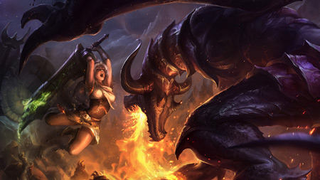

| ¿Qué es League of Legends? |
 Cómo Interactuar con Otros Jugadores
Cómo Interactuar con Otros Jugadores
League of Legends es un juego por equipos, en el que millones de jugadores de todo el mundo compiten a diario en los Campos de la Justicia. Mantener el contacto con otros invocadores con los que te divertiste jugando te permitirá crear una relación o una amistad duradera. En esta sección encontrarás sugerencias para rellenar tu lista de amigos, crear partidas personalizadas y unir fuerzas con tus compañeros invocadores.
|
| Código del Invocador |
| Cómo Interactuar con Otros Jugadores |
| Comandos de Chat |
|
|
| Cómo Agregar Otros Amigos |
 La lista de amigos es el modo más sencillo de mantenerse en contacto con los jugadores con los que has disfrutado compitiendo. Cuando aceptes una petición de amistad de un invocador (o cuando él acepte la tuya), pueden enviarse mensajes, ver cuándo están conectados, ver las estadísticas y mucho más.
La lista de amigos es el modo más sencillo de mantenerse en contacto con los jugadores con los que has disfrutado compitiendo. Cuando aceptes una petición de amistad de un invocador (o cuando él acepte la tuya), pueden enviarse mensajes, ver cuándo están conectados, ver las estadísticas y mucho más.
|
Agrega amigos del mundo real buscando sus nombres de invocadores
Agrega invocadores contra los que hayas jugado recientemente
Ve el perfil, historial de combate y estadísticas de juego de tus amigos
Sé espectador de tus amigos
|
|
| Cómo jugar con amigos |
|

Invitar a tus amigos a jugar contigo es algo muy fácil. Selecciona el modo de juego en el que te gustaría jugar y haz clic en el botón "Invitaré a mis propios compañeros de equipo" para empezar a invitar a tus amigos.
Invita a tus amigos a jugar contigo en diversos modos de juego
Reúne hasta a 10 amigos en una partida personalizada
Crea y pon un nombre a tu equipo para competir en una partida clasificatoria
|
| Cómo seguir el Código del Invocador |
|
El Código del Invocador sirve para delimitar lo que es un comportamiento positivo dentro y fuera de los Campos de la Justicia. Los principios del Código animan a jugar como equipo, a ofrecer comentarios constructivos, a entablar amistad y a ayudar a los nuevos jugadores.
|